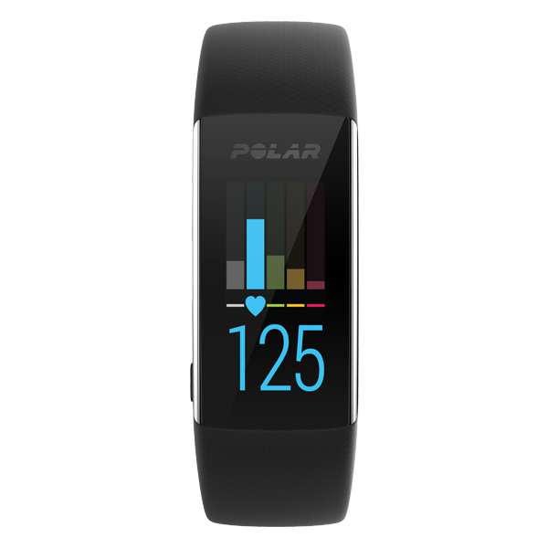
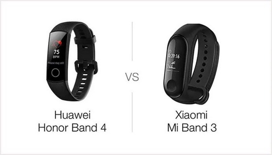
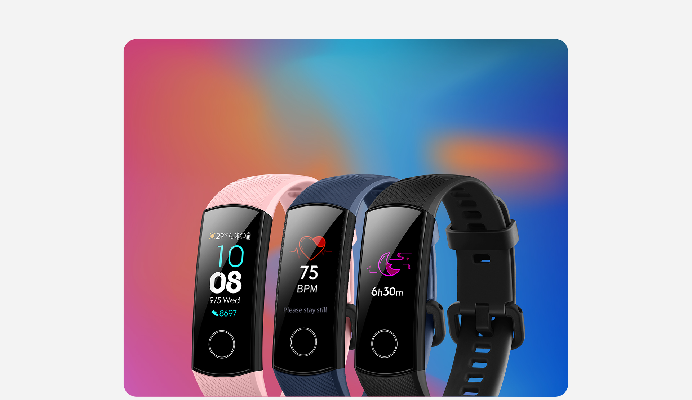
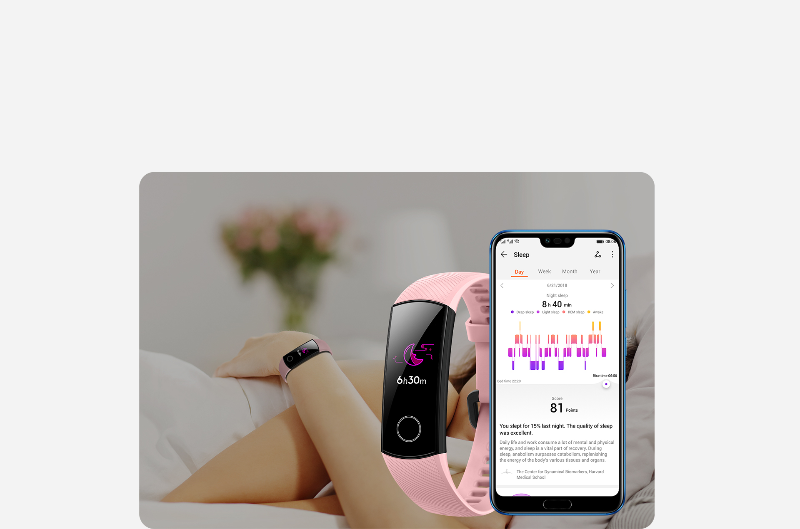

Es un seguidor de actividad. Estos, son dispositivos que usualmente se utilizan en la muñeca (como un reloj), y monitorean algunas actividades cotidianas de tu día a día. Un seguidor de actividad (Activity Tracker, por su nombre en inglés) es un dispositivo o aplicación para monitorear y dar seguimiento a los datos relacionados con la forma física, tales como la distancia caminada o corrida, consumo de calorías y en algunos casos ritmo cardíaco y calidad de sueño. El término es principalmente empleado para dispositivos electrónicos de monitoreo que están sincronizados, en muchos casos inalámbricamente a una computadora o a un teléfono inteligente para el seguimiento de datos a largo plazo.
Hoy en día, la tecnologia nos domina, y existen millones de empresas (algunas mas grandes que otras), que se encargan de producir estos aparatos tecnologicos. Marcas tales como Huawei, Honor, Xiaomi, Amazfit, Polar, entre otras, se han encargado de fabricar estas pulseras inteligentes, para brindar al usuario un gran repertorio de opciones. Con el paso del tiempo, y como todo en este mundo de la tecnologia, las empresas buscan innovación, y deciden sacar nuevas versiones (mejoradas claramente) de sus smartbands. Las SmartBands, cumplen todas con la misma función, aunque cual comprar depende de lo que cada uno busque; si eres un gran deportista y buscas mucha precisión en todos los datos de tus actividades fisicas, te recomiendo que escojas una marca especializada en un ambito plenamente deportivo, tal como Polar. Si estas buscando algo no tan profesional, mas un accesorio o algo por el estilo, te recomendaria que dirigieras tu busqueda hacía marcas de buenos accesorios tales como Xiaomi, Huawei, u Honor.
 Decidí crear una sección dedicada unicamente a esta manilla inteligente, ya que, bajo mi criterio, es la mejor en relación calidad-precio. Su precio en España es de aproximadamente 60Euros, pero se puede ecnontrar en foros como JoyBuy en 31Euros aproximadamente. La pulsera de Honor cambia especialmente respecto a la anterior en su nueva pantalla, se trata de una de 0,95 pulgadas con tecnología AMOLED y un acabado 2.5D con ligera curvatura. Donde no mejora o se mantiene es en la autonomía. Si en la versión del año pasado prometían hasta 30 días de duración para cada carga completa con un uso normal, ahora se reduce a dos semanas o seis días si se usa el modo avanzado de sueño. Indiferentemente, es mucho más que los dos días promedio que ofrecen los relojes inteligentes. Entre los cambios en sus funcionalidad, ahora la pulsera mide el sueño en sus diferentes fases gracias a TrueSleep 2.0 En cuanto a deportes, se han enfocado en la mejora para deportes acuáticos, la pulsera de Honor reconoce los diferentes tipos de brazada en natación. Y por supuesto, para hacer eso es resistente al agua, concretamente es sumergible hasta 50 metros de profundidad. La frecuencia cardiaca por su parte será continua y en tiempo real según ha indicado el fabricante.
 